Authors: Gang Zheng, Wenqi Xue, Mengli Wang, Peng Chen, Benniu Zhang
Type: theory · Category: other · PDF: https://arxiv.org/pdf/2608.16751v1
Analysis basis: full PDF text, analyzed in chunks
Topic relevance: quantum measurements 1/5
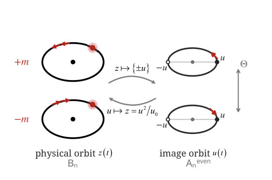
Summary. The paper demonstrates that the entire bound-state spectrum of the 2D Coulomb problem can be derived exactly from purely classical geometric principles, bypassing traditional quantum postulates. By establishing an 'amplitude-closure criterion,' they show that the system's dynamics are equivalent to those of a harmonic oscillator in an auxiliary 'image space.' This provides a powerful, non-perturbative benchmark for analyzing universal effects in 2D exciton physics.
Why it may be interesting. This work provides a profound theoretical benchmark by inverting the usual quantum hierarchy: the wave equation emerges as a representation of underlying classical geometry rather than an independent starting principle. This methodology could offer new insights into non-integrable or strongly correlated systems where standard semiclassical methods fail.
Main problem. To determine if the full bound-state spectral structure of the two-dimensional Coulomb problem can be derived exactly from classical mechanics, without invoking quantum axioms like the wave equation.
Main result. The complete spectrum is shown to follow as an exact theorem from classical mechanics augmented by a phase-scale parameter $\alpha$, yielding characteristic odd-integer Rydberg scaling purely from classical geometry.
Method. The authors derived an amplitude-closure criterion necessary and sufficient for the classical propagator kernel to satisfy a linear evolution equation, mapping the singular potential via Levi-Civita regularization into a solvable quadratic Hamiltonian class.
Model / system. The central model is the two-dimensional Coulomb problem, used to describe high-lying Rydberg excitons in 2D semiconductors. The analysis uses classical mechanics principles (action, Van Vleck amplitude) to construct and test a quantum-like evolution kernel.
Key observables. Odd-integer modal numbers ($1/N^2$ energy ratios), $N$-fold degeneracies, and the spectral structure independent of the phase-scale parameter $\alpha$.
Important parameters / regimes. The phase-scale parameter $\alpha$ (with dimensions of action); the 2D Coulomb potential; the harmonic oscillator parameters derived from regularization.
Assumptions / limitations. No semiclassical, short-wavelength, or $\hbar \to 0$ approximation is invoked; the derivation relies on establishing an exact equivalence between classical propagation and linear wave evolution via the closure criterion.
Figures summary. Figure 1 illustrates the LC chiral round trip, showing how a physical Kepler orbit lifts to an antipodal pair of oscillator orbits in image space.
Paper structure. The paper establishes a hierarchy: first defining the classical kernel and deriving the amplitude-closure criterion; second, using Levi-Civita regularization to map the Coulomb potential onto quadratic Hamiltonians that satisfy this criterion; finally, proving that this geometric constraint uniquely determines the full discrete spectrum.
High-lying Rydberg excitons in two-dimensional semiconductors universally exhibit a characteristic odd-integer energy scaling distinct from three-dimensional systems. While this hallmark of two-dimensional Coulomb interaction is well known from quantum mechanical solutions, its deeper classical geometric origin remains unclarified. Here we show that the complete bound-state spectral structure of the two-dimensional Coulomb problem---a central model for two-dimensional exciton physics---follows as an exact theorem from classical mechanics augmented by a single phase-scale parameter $α$ with dimensions of action. We derive an amplitude-closure criterion as a necessary and sufficient condition for a classical propagator kernel to satisfy a linear evolution equation, and demonstrate that the singular Coulomb potential can be mapped shell-by-shell via Levi-Civita regularization into the class of quadratic Hamiltonians that obey this criterion exactly. The resulting spectrum bears odd-integer modal numbers, $1/N^2$ energy ratios and $N$-fold degeneracies, all independent of $α$ and consistent with experimental observations of high-lying Rydberg excitons. This work provides a pure classical-geometry benchmark for two-dimensional exciton spectral analysis, allowing quantitative disentanglement of universal Coulomb effects from material-specific screening effects. No semiclassical, short-wavelength or $\hbar \to 0$ approximation is invoked at any stage. Our results invert the usual logical hierarchy for this integrable system: the wave equation emerges as a representation of the underlying classical geometry, rather than as an independent first principle.
Authors: Sanjida Yeasmin, Sathyanarayanan Chandramouli, Ziad H. Musslimani, Andrea Blanco-Redondo
Type: theory · Category: other · PDF: https://arxiv.org/pdf/2608.16300v1
Analysis basis: full PDF text, analyzed in chunks
Topic relevance: interference shaping light 1/5
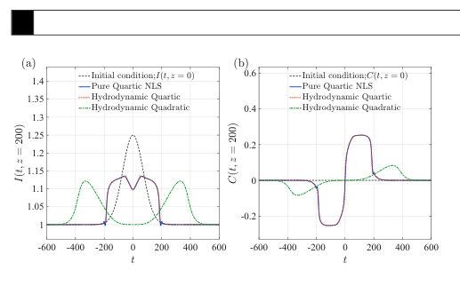
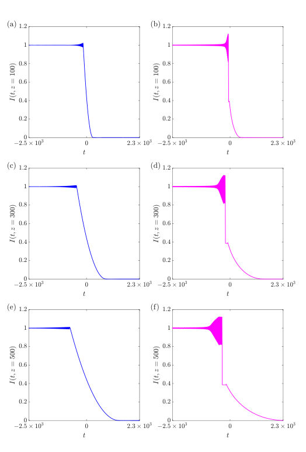
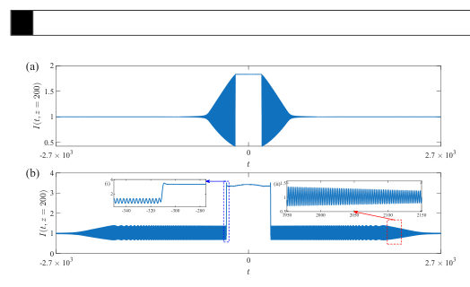
Summary. This paper analyzes optical shock waves governed by a pure-quartic Nonlinear Schrödinger equation. The research highlights that this quartic dispersion leads to distinct dynamics compared to the classical quadratic case, notably causing wave breaking before wave splitting in small amplitude regimes. Using Riemann problems, they demonstrate unique wave structures indicative of nonlinear information carriers.
Why it may be interesting. This work explores nonlinear dispersive wave phenomena in optics, which is highly relevant to quantum optics and nonlinear wave propagation studies, particularly concerning shock formation mechanisms beyond the standard Kerr model.
Main problem. The study investigates the dynamics of pure-quartic optical dispersive shock waves (DSWs) governed by a modified Nonlinear Schrödinger equation.
Main result. For the quartic case, wave breaking occurs prior to wave splitting in the small amplitude regime, and specific initial conditions generate counterpropagating traveling dispersive shock waves (tDSWs).
Method. The analysis involves deriving corresponding hydrodynamic systems via Madelung transformation and employing numerical simulations using spectral methods (ETDRK4) for both the full equation and its approximation.
Model / system. The system is modeled by the Pure-Quartic NLS (PQNLS) equation, which incorporates self-defocusing Kerr nonlinearity and fourth-order dispersion. This is compared against the classical quadratic NLS case using 'dam-break' Riemann problems.
Key observables. Optical intensity ($I$) and optical chirp/hydrodynamic velocity ($C$).
Important parameters / regimes. The relative strength of quartic vs. quadratic dispersion; small amplitude regime behavior.
Assumptions / limitations. The hydrodynamic approximation is derived from the PQNLS via Madelung transformation, though a deeper analysis of this system is deferred to future work.
Figures summary. Figures compare numerical simulations for dam-break and piston Riemann problems, contrasting the evolution (rarefaction vs. counterpropagating waves) between quadratic and quartic NLS regimes.
Paper structure. The paper first establishes the PQNLS model and its hydrodynamic counterpart, then uses 'dam-break' and 'piston' configurations as prototypical Riemann problems to numerically compare wave breaking/splitting dynamics against the standard quadratic NLS case.
In this paper, we study the emergence and dynamics of pure-quartic optical dispersive shock waves governed by the nonlinear Schrödinger (NLS) equation with self-defocusing Kerr nonlinearity and fourth-order dispersion. The corresponding dispersionless hydrodynamic system reveals a distinct mechanism for wave breaking, driven by the nonlinear self-steepening of the hydrodynamic velocity. We illustrate this mechanism through optical dam-break configurations described by Riemann problems and show that, in contrast to the classical quadratic NLS equation, wave breaking occurs prior to wave splitting even in the small amplitude regime. Numerical simulations of the pure-quartic NLS (PQNLS) equation and its hydrodynamic approximation confirm these qualitatively distinct dynamical regimes.
Authors: Xavier Blase, Mauricio Rodriguez-Mayorga, Ivan Duchemin
Type: theory · Category: other · PDF: https://arxiv.org/pdf/2608.16427v1
Analysis basis: full PDF text, analyzed in chunks
Topic relevance: Keldysh / 2PI / non-Gaussian methods 1/5
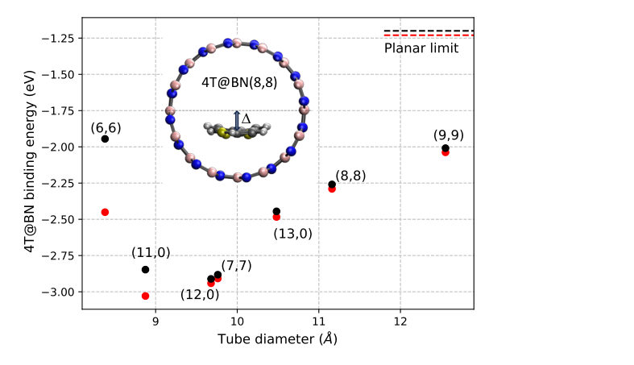
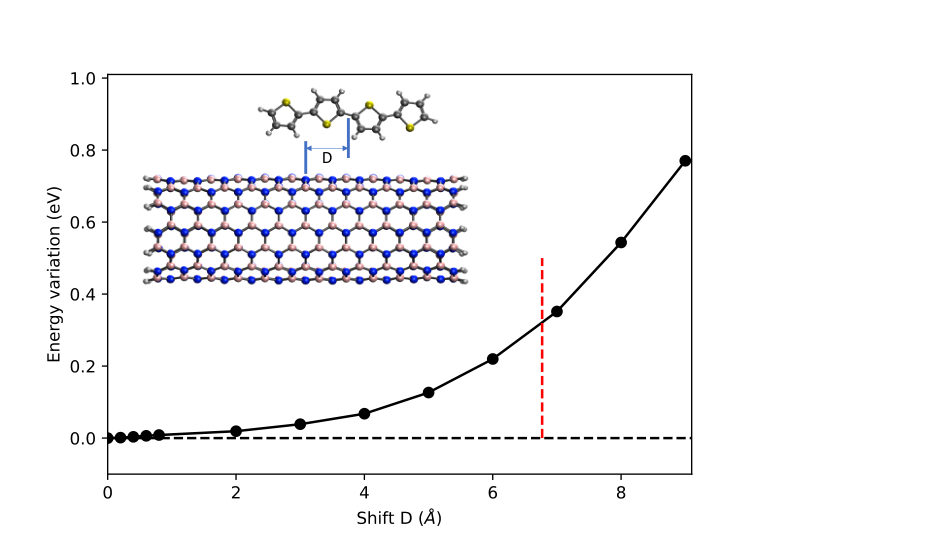
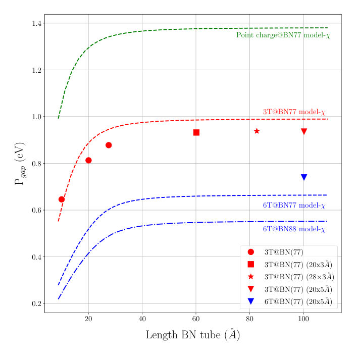
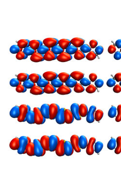
Summary. The paper theoretically examines oligothiophene molecules confined in boron-nitride nanotubes using advanced many-body methods. It finds that confinement stabilizes the molecules, promoting aggregation, and critically, that the nanotube's electronic polarization significantly shifts the molecule's optical gap. This clarifies that BNNTs are active participants in modifying molecular optoelectronics rather than just inert containers.
Why it may be interesting. This work is highly relevant as it models the interaction between organic chromophores and inorganic nanomaterials (BNNTs), a key area for developing molecular electronics and quantum emitters where substrate effects are critical.
Main problem. The study investigates how confining oligothiophene molecules within boron-nitride nanotubes affects their structural stability and optoelectronic properties.
Main result. Confinement promotes head-to-tail aggregation, and the electronic gap is significantly renormalized (redshifted) by long-range screening effects from the nanotube environment, rather than just acting as a passive shield.
Method. The research employs advanced many-body perturbation theories, specifically Density Functional Theory (DFT), GW approximation, and Bethe-Salpeter Equation (BSE) calculations.
Model / system. The system models oligothiophene ($ ext{nT}$) molecules encapsulated within boron-nitride nanotubes ($ ext{BNTs}$). The analysis covers structural relaxation, electronic excitation energies, and optical absorption spectra under confinement.
Key observables. Binding energy, corrugation potential, photoemission gap (GW), and optical absorption onset (BSE).
Important parameters / regimes. Tube diameter ($\sim 10 ext{ Å}$ optimal binding), exciton splitting ($\approx 75 ext{ meV}$), redshift magnitude ($\le 250 ext{ meV}$).
Assumptions / limitations. The analysis relies on approximations like the fragment approach for large systems and assumes that screening effects are dominant over simple hybridization.
Figures summary. Figures illustrate the binding energy dependence on tube diameter, the potential profile for molecular sliding along the tube axis, and the evolution of electronic/optical properties as a function of confinement geometry.
Paper structure. The paper progresses by first establishing structural stability (binding energy) and mobility; it then moves to electronic structure using GW theory to quantify gap renormalization due to screening; finally, it examines optical response via BSE, including exciton-exciton interactions in dimers.
We investigate the structural and optoelectronic properties of oligothiophene (nT) molecules encapsulated in boron-nitride (BN) nanotubes using density functional theory, many-body GW and Bethe-Salpeter equation approaches. We show that the binding energy is maximized for tube diameters of approximately 10 Å, decreasing gradually for larger diameters. The nT molecules can slide along the tube with a corrugation potential smaller than room temperature thermal energy, promoting their head-to-tail aggregation. Regarding the electronic properties, we find that hybridization with the tube electronic states has a much smaller effect than that of screening, which can close the nT photoemission gap by as much as an eV. A simple model for the polarization of the BN tube demonstrates how these polarization effects decrease with increasing nT molecule length and BN tube diameter. Compared to the gas phase optical properties, structural relaxation, hybridization, and screening can redshift the absorption onset by up to 250 meV for isolated intercalated nTs. Additionally, the study of a head-to-tail sexithiophene dimer reveals an exciton-exciton interaction that splits the absorption onset into a lowest bright exciton, separated by approximately 75 meV from a dark peak. This suggests possible collective effects upon the formation of nT chains inside BN tubes. Our results confirm and clarify experimental data, mitigating the conclusion that insulating BN tubes just act as a protecting environment for encapsulated molecules.
Authors: Doh Young Kim, Seung Hun Lee, Akira Furusaki, Bohm-Jung Yang
Type: theory · Category: disordered systems and neural networks · PDF: https://arxiv.org/pdf/2608.15529v1
Analysis basis: full PDF text, analyzed in chunks
Topic relevance: Keldysh / 2PI / non-Gaussian methods 1/5
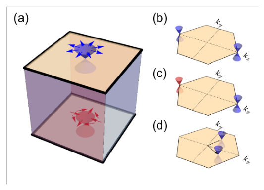
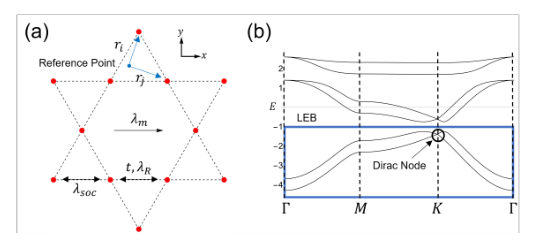
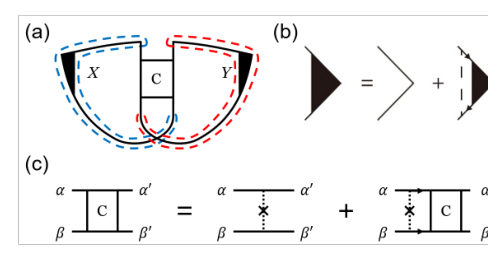
Summary. This work analyzes disorder effects on conductivity in magnetic Euler bands, systems characterized by non-trivial topology. The authors demonstrate that even when physical time-reversal symmetry is broken, an emergent effective symmetry dictates the system's localization behavior. This reveals a fundamental principle: the quantum transport correction depends only on this effective symmetry, not on the specific topological details like Dirac node vorticity.
Why it may be interesting. The finding that effective crystalline symmetries can dictate the universality class of localization behavior, overriding node-specific topological invariants, provides deep insight into how crystal structure dictates quantum transport in complex materials.
Main problem. The study investigates the quantum correction to conductivity (Weak Localization/Anti-localization) caused by disorder in two-dimensional topological bands with a non-zero Euler class.
Main result. The localization behavior is governed by an emergent effective time-reversal symmetry, leading to weak localization even when physical TRS is broken. Crucially, this quantum correction is shown to be independent of the specific vorticity configuration of Dirac nodes.
Method. The analysis employs diagrammatic calculations (Cooperon contributions) within the weak-disorder limit, comparing theoretical results across different disorder potentials and symmetry classes.
Model / system. The system models spinful magnetic Euler bands derived from a kagome lattice, incorporating intrinsic SOC, Rashba coupling, and Zeeman fields. The low-energy physics is captured by an effective Hamiltonian projected onto the lowest Euler band (LEB).
Key observables. Quantum correction to conductivity ($\delta g$), which exhibits logarithmic divergences characteristic of Weak Localization (WL) or Anti-localization (WAL).
Important parameters / regimes. The presence and nature of symmetries, particularly the effective time-reversal symmetry ($T^*$), and the type of disorder potential (scalar, intravalley, intervalley).
Assumptions / limitations. The analysis relies on diagrammatic calculations in the weak-disorder regime and utilizes approximations such as assuming certain disorder potentials dominate elastic scattering.
Figures summary. Figures illustrate Dirac fermions on topological insulators and the kagome lattice model setup. Figure 3 shows Feynman diagrams for the conductivity correction ($\delta g$), and tables summarize $\delta g$ values based on applied disorder types and symmetry classes.
Paper structure. The paper progresses by first establishing the physical model (magnetic Euler bands) and its symmetries, then analyzing how different disorder potentials perturb the system's transport properties via diagrammatic calculations. It culminates in a direct comparison with graphene to prove the universality of the underlying symmetry constraint.
We study the quantum correction to the conductivity due to disorder in two-dimensional fragile topological bands with nonzero Euler class. Contrary to graphene where two Dirac nodes have opposite vorticities, two bands with a unit Euler number possess two Dirac points with the same vorticity, which may affect the Anderson localization. Most notably, we report an anomalous localization behavior in spinful magnetic Euler bands based on symmetry analysis and diagrammatic calculations. Despite the presence of spin-orbit coupling and an in-plane magnetization that explicitly breaks physical time-reversal symmetry, the system exhibits weak localization behavior characteristic of the orthogonal symmetry class. We demonstrate that this counter-intuitive phenomenon originates from an emergent effective time-reversal symmetry composed of crystalline and spacetime inversion symmetries, allowing it to supersede the standard localization behavior. Our findings reveal that the effective crystalline symmetries can fundamentally alter the universality class of disordered systems, rendering the localization behavior independent of the specific vorticity configuration of Dirac nodes.